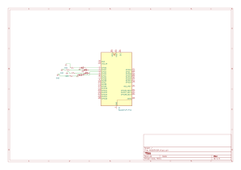
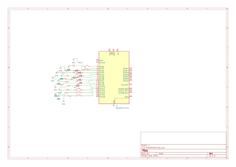

📘 Tarea 6 — Ejercicios de Programación
1) Resumen
- Nombre del proyecto: Multialarmas / Control de velocidad en Pong
- Autor: Carlos Ernesto Camacho González
- Curso / Asignatura: Sistemas Embebidos
- Fecha: 16/09/2025
- Descripción breve:
- Ejercicio 1: Cuatro LEDs a distintas frecuencias con temporizador de software (sin interrupciones).
- Ejercicio 2: Pong con dos botones para subir/bajar la velocidad sin
delayusando ALARM0/1 y rearme acumulativo.
2) Objetivos
- Generar y controlar temporizaciones independientes para múltiples salidas.
- Ajustar la velocidad de un juego sin bloquear el bucle principal.
- Usar rearme acumulativo y antirrebote por flanco.
3) Ejercicio 1 — Cuatro alarmas / cuatro LEDs a distintas frecuencias (sin interrupciones)
Qué debe hacer
Configurar cuatro LEDs en pines distintos. Cada LED alterna (toggle) con su intervalo propio usando un temporizador de software basado en time_us_32() (sin IRQ).
Código
// Cuatro LEDs a distintas frecuencias (RP2350 / Pico 2) SIN interrupciones.
// LED0=GPIO 1, LED1=GPIO 0, LED2=GPIO 2, LED3=GPIO 3.
#include "pico/stdlib.h"
#include "pico/time.h"
#include "hardware/gpio.h"
#define LED0_PIN 1 // antes: PICO_DEFAULT_LED_PIN
#define LED1_PIN 0
#define LED2_PIN 2
#define LED3_PIN 3
static const uint8_t PINES[4] = { LED0_PIN, LED1_PIN, LED2_PIN, LED3_PIN };
// Intervalo ENTRE toggles (el período visible ON+OFF es el doble)
static const uint32_t INTERVALO_US[4] = {
300000u, // GPIO 1: 300 ms
200000u, // GPIO 0: 200 ms
120000u, // GPIO 2: 120 ms
80000u // GPIO 3: 80 ms
};
static uint32_t next_us[4];
int main(void) {
for (int i = 0; i < 4; ++i) {
gpio_init(PINES[i]);
gpio_set_dir(PINES[i], GPIO_OUT);
gpio_put(PINES[i], 0);
}
uint32_t now = time_us_32();
for (int i = 0; i < 4; ++i) next_us[i] = now + INTERVALO_US[i];
while (true) {
now = time_us_32();
for (int i = 0; i < 4; ++i) {
if ((int32_t)(now - next_us[i]) >= 0) {
gpio_xor_mask(1u << PINES[i]);
next_us[i] += INTERVALO_US[i]; // rearme acumulativo
}
}
tight_loop_contents();
}
}
Esquematico de conexión
 Figura 1.
video
4) Ejercicio 2 — Pong: dos botones para subir/bajar velocidad (sin delay)
Qué debe hacer
Añadir BTN_MAS (↑ velocidad) y BTN_MENOS (↓ velocidad). El tempo del juego se controla con ALARMA_JUEGO (modo µs), rearme acumulativo y antirrebote. El parpadeo de punto va con ALARMA_PUNTO (no bloqueante).
Código
#include "pico/stdlib.h"
#include "hardware/irq.h"
#include "hardware/structs/timer.h"
#include "hardware/gpio.h"
#define BTN_J1 0 // Botón jugador izquierda
#define BTN_J2 1 // Botón jugador derecha
#define LED_J1 2 // LED indicador puntos J1
#define LED_J2 3 // LED indicador puntos J2
#define LED0 4 // Posición 0 de LED
#define LED1 5
#define LED2 6 // Centro de LEDs
#define LED3 7
#define LED4 8 // Posición 4 de LED
#define RESET 9 // Botón de reinicio
// Botones NUEVOS
#define BTN_MAS 10 // Subir velocidad
#define BTN_MENOS 11 // Bajar velocidad
// Alarmas del timer
#define ALARMA_JUEGO_NUM 0 // tick de juego
#define ALARMA_PUNTO_NUM 1 // parpadeo de punto
#define IRQ_ALARMA_JUEGO timer_hardware_alarm_get_irq_num(timer_hw, ALARMA_JUEGO_NUM)
#define IRQ_ALARMA_PUNTO timer_hardware_alarm_get_irq_num(timer_hw, ALARMA_PUNTO_NUM)
// Velocidades (ms)
#define VEL_PELOTA 100
#define VEL_REBOTE 300
// Rango y paso de velocidad (us)
#define VEL_MIN_US 40000u
#define VEL_MAX_US 400000u
#define VEL_PASO_US 20000u // salto entre us
#define ANTIRREBOTE_VEL_US 120000u // antirrebote para botones de velocidad
uint8_t POS = LED2; // Pelota arranca en el centro
bool DIR = 1; // 1 = derecha, 0 = izquierda
bool START = false; // Juego detenido al inicio
volatile bool GOLPE_J1 = false;
volatile bool GOLPE_J2 = false;
volatile bool START_J1 = false;
volatile bool START_J2 = false;
volatile bool RESET_STATE = false;
// Máscaras
uint32_t LEDS_MASK;
static uint32_t MASCARA_LEDS_POS; // solo LEDs de posición, no marca
// Tiempo y tick
static inline uint32_t microsegundos(void){ return timer_hw->timerawl; }
static volatile uint32_t VEL_PELOTA_US = (uint32_t)VEL_PELOTA * 1000u; // periodo del tick en µs
static volatile uint32_t PROXIMO_TICK_US = 0;
static volatile uint32_t ULTIMO_CAMBIO_VEL_US = 0; // antirrebote de BTN_MAS/BTN_MENOS
// Ventana de rebote fija en tiempo
#define REBOTE_US ((uint32_t)VEL_REBOTE * 1000u)
static volatile bool EN_PARED = false;
static volatile uint32_t VENTANA_HASTA_US = 0;
// Parpadeo no bloqueante (ALARMA_PUNTO)
static volatile bool PARPADEO_ACTIVO = false;
static volatile uint8_t PIN_LED_PARPADEO = 0;
static volatile uint8_t PARPADEOS_RESTANTES = 0;
static volatile uint32_t PROXIMO_PARPADEO_US = 0;
#define PARPADEO_MEDIO_US 200000u // 200 ms ON/OFF
// Prototipos requeridos
static void PONG(uint PIN, uint32_t EVENT_MASK);
void BLINK(uint8_t LED);
void REINICIAR();
void MOVER_PELOTA(void);
// ---- ISRs de alarmas
static void irq_alarma_juego(void){
hw_clear_bits(&timer_hw->intr, 1u << ALARMA_JUEGO_NUM);
MOVER_PELOTA();
PROXIMO_TICK_US += VEL_PELOTA_US; // rearme acumulativo
timer_hw->alarm[ALARMA_JUEGO_NUM] = PROXIMO_TICK_US;
}
static void irq_alarma_punto(void){
hw_clear_bits(&timer_hw->intr, 1u << ALARMA_PUNTO_NUM);
if (!PARPADEO_ACTIVO || PARPADEOS_RESTANTES == 0){
gpio_put(PIN_LED_PARPADEO, 0);
PARPADEO_ACTIVO = false;
return;
}
sio_hw->gpio_togl = (1u << PIN_LED_PARPADEO);
PARPADEOS_RESTANTES--;
PROXIMO_PARPADEO_US += PARPADEO_MEDIO_US; // rearme acumulativo
timer_hw->alarm[ALARMA_PUNTO_NUM] = PROXIMO_PARPADEO_US;
}
int main() {
// LEDs
LEDS_MASK = (1u << LED_J1) | (1u << LED_J2) | (1u << LED0) | (1u << LED1) |
(1u << LED2) | (1u << LED3) | (1u << LED4);
MASCARA_LEDS_POS = (1u << LED0) | (1u << LED1) | (1u << LED2) | (1u << LED3) | (1u << LED4);
gpio_init_mask(LEDS_MASK);
gpio_set_dir_masked(LEDS_MASK, LEDS_MASK);
gpio_clr_mask(LEDS_MASK);
// Botones
gpio_init(BTN_J1); gpio_set_dir(BTN_J1, GPIO_IN); gpio_pull_up(BTN_J1);
gpio_init(BTN_J2); gpio_set_dir(BTN_J2, GPIO_IN); gpio_pull_up(BTN_J2);
gpio_init(RESET); gpio_set_dir(RESET, GPIO_IN); gpio_pull_up(RESET);
gpio_init(BTN_MAS); gpio_set_dir(BTN_MAS, GPIO_IN); gpio_pull_up(BTN_MAS);
gpio_init(BTN_MENOS);gpio_set_dir(BTN_MENOS, GPIO_IN);gpio_pull_up(BTN_MENOS);
gpio_set_mask(1u << POS); // LED inicial en centro
// IRQ GPIO por flanco de bajada
gpio_set_irq_enabled_with_callback(BTN_J1, GPIO_IRQ_EDGE_FALL, true, &PONG);
gpio_set_irq_enabled(BTN_J2, GPIO_IRQ_EDGE_FALL, true);
gpio_set_irq_enabled(RESET, GPIO_IRQ_EDGE_FALL, true);
gpio_set_irq_enabled(BTN_MAS, GPIO_IRQ_EDGE_FALL, true);
gpio_set_irq_enabled(BTN_MENOS,GPIO_IRQ_EDGE_FALL, true);
// Timer de sistema en µs
timer_hw->source = 0u; // base de tiempo en µs (RP2350)
uint32_t ahora = microsegundos();
// Programa ALARMA_JUEGO (primer tick)
PROXIMO_TICK_US = ahora + VEL_PELOTA_US;
timer_hw->alarm[ALARMA_JUEGO_NUM] = PROXIMO_TICK_US;
// Limpia flags, registra handlers y habilita
hw_clear_bits(&timer_hw->intr, (1u << ALARMA_JUEGO_NUM) | (1u << ALARMA_PUNTO_NUM));
irq_set_exclusive_handler(IRQ_ALARMA_JUEGO, irq_alarma_juego);
irq_set_exclusive_handler(IRQ_ALARMA_PUNTO, irq_alarma_punto);
hw_set_bits(&timer_hw->inte, (1u << ALARMA_JUEGO_NUM) | (1u << ALARMA_PUNTO_NUM));
irq_set_enabled(IRQ_ALARMA_JUEGO, true);
irq_set_enabled(IRQ_ALARMA_PUNTO, true);
while (true) { tight_loop_contents(); }
}
// ---- ISR GPIO
static void PONG(uint PIN, uint32_t EVENT_MASK) {
if (EVENT_MASK & GPIO_IRQ_EDGE_FALL) {
if (PIN == BTN_J1) {
if (!START) START_J1 = true;
else if (POS == LED0) GOLPE_J1 = true;
} else if (PIN == BTN_J2) {
if (!START) START_J2 = true;
else if (POS == LED4) GOLPE_J2 = true;
} else if (PIN == RESET) {
RESET_STATE = true;
} else if (PIN == BTN_MAS || PIN == BTN_MENOS) {
uint32_t t = microsegundos();
// antirrebote botones de velocidad
if ((int32_t)(t - ULTIMO_CAMBIO_VEL_US) > (int32_t)ANTIRREBOTE_VEL_US) {
if (PIN == BTN_MAS) {
// más rápido = menor periodo
if (VEL_PELOTA_US > VEL_MIN_US + VEL_PASO_US - 1) VEL_PELOTA_US -= VEL_PASO_US;
else VEL_PELOTA_US = VEL_MIN_US;
} else {
// más lento = mayor periodo
if (VEL_PELOTA_US < VEL_MAX_US - VEL_PASO_US + 1) VEL_PELOTA_US += VEL_PASO_US;
else VEL_PELOTA_US = VEL_MAX_US;
}
// re-alinear próximo tick para notar el cambio de inmediato
PROXIMO_TICK_US = t + VEL_PELOTA_US;
timer_hw->alarm[ALARMA_JUEGO_NUM] = PROXIMO_TICK_US;
ULTIMO_CAMBIO_VEL_US = t;
}
}
}
gpio_acknowledge_irq(PIN, EVENT_MASK);
}
// BLINK del original: ahora inicia parpadeo no bloqueante
void BLINK(uint8_t LED) {
PIN_LED_PARPADEO = LED;
PARPADEOS_RESTANTES = 6; // 3 destellos ON/OFF
gpio_put(PIN_LED_PARPADEO, 0);
PARPADEO_ACTIVO = true;
PROXIMO_PARPADEO_US = microsegundos() + PARPADEO_MEDIO_US;
timer_hw->alarm[ALARMA_PUNTO_NUM] = PROXIMO_PARPADEO_US;
}
void REINICIAR() {
POS = LED2;
START = false;
GOLPE_J1 = false;
GOLPE_J2 = false;
START_J1 = false;
START_J2 = false;
EN_PARED = false;
PARPADEO_ACTIVO = false;
gpio_put(LED_J1, 0);
gpio_put(LED_J2, 0);
gpio_clr_mask(MASCARA_LEDS_POS);
gpio_set_mask(1u << POS); // LED centro
}
void MOVER_PELOTA() {
uint32_t tnow = microsegundos();
if (RESET_STATE) {
REINICIAR();
RESET_STATE = false;
return;
}
if (!START) {
if (START_J1) { DIR = 1; START = true; START_J1 = false; }
else if (START_J2) { DIR = 0; START = true; START_J2 = false; }
gpio_set_mask(1u << POS); // LED centro
return;
}
// Ventana fija cuando está en pared
if (EN_PARED) {
if ((int32_t)(tnow - VENTANA_HASTA_US) >= 0) {
if (POS == LED0) {
if (GOLPE_J1) { DIR = 1; }
else { BLINK(LED_J2); POS = LED2; DIR = 1; START = true; }
GOLPE_J1 = false;
} else if (POS == LED4) {
if (GOLPE_J2) { DIR = 0; }
else { BLINK(LED_J1); POS = LED2; DIR = 0; START = true; }
GOLPE_J2 = false;
}
EN_PARED = false;
gpio_clr_mask(MASCARA_LEDS_POS);
gpio_set_mask(1u << POS);
}
return; // mientras dura la ventana no se mueve
}
// Mover pelota 1 paso
if (DIR && POS < LED4) POS++;
else if (!DIR && POS > LED0) POS--;
// Si llegó a pared, abrir ventana
if (POS == LED0 || POS == LED4) {
EN_PARED = true;
VENTANA_HASTA_US = tnow + REBOTE_US;
}
gpio_clr_mask(MASCARA_LEDS_POS);
gpio_set_mask(1u << POS);
}
Esquematico de conexión
 Figura 2.
video
5) Resultados y conclusiones
-
Ej. 1: Cada LED parpadea a su frecuencia (intervalo configurado). El rearme acumulativo en software mantiene el ritmo sin sleep_ms().
-
Ej. 2: BTN_MAS/BTN_MENOS cambian la velocidad al vuelo con antirrebote y realineo del próximo tick.